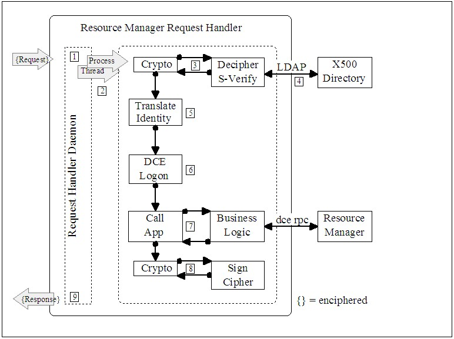

| Example: Security Architecture for General Web Security |
 |
|
| Related Elements |
|---|
A General Web Security Functional Architecture
|
|
|
Authentication |
Confidentiality and Integrity |
Access Control |
Audit |
|
BrowseróWeb Server |
Yes |
Yes |
Yes |
Yes |
|
BrowseróWeb ServeróResource Manager |
Yes |
Yes |
Yes |
Yes |
|
Web Server óResource Manager |
Yes |
Yes |
Yes |
Yes |
Security Architecture for the Resource Manager / Request Handler for Component shown above
When the resource manager is a DCE enabled application server (SYBASE, DB2, CICS, IMS, Encina), the user’s signed and
enciphered request is relayed by the middle tier web server to a resource manager request handler that is a JPM
customized component. In this case the request handler
1. Accepts enciphered requests from the middle tier server.
2. Initiates a separate process / thread to handle the request.
3. Verifies the signature and deciphers the request.
4. Ensures that the user’s privilege to sign request has not been revoked.
5. Establishes an enterprise identity that is to be used to process the request (based on the Internet credential,
certificate).
6. Establishes a security context for the request that is based on the enterprise identity.
7. Performs any necessary business logic including access to enterprise resource managers and the translation of
requests and responses to/from Internet and enterprise formats.
8. Signs / enciphers the response.
9. Returns the response to the middle tier web server.

Web Architecture Resource Manager Request Handler
| © Copyright IBM Corp. 1987, 2012 All Rights Reserved Property of IBM These materials are intended only for use as part of an IBM engagement |